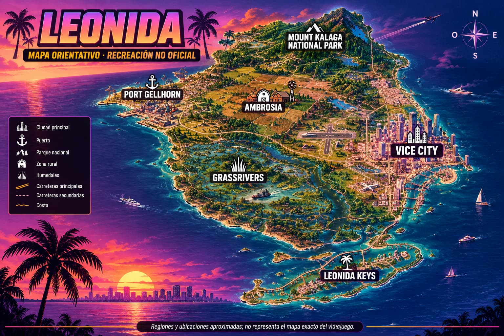

GTA VI Grand Theft Auto
El mapa de GTA VI: Leonida
Grand Theft Auto VI se desarrolla en Leonida, un estado ficticio inspirado en Florida, Estados Unidos. Este enorme territorio cuenta con ciudades, playas, islas, zonas rurales y diferentes paisajes naturales. Una de sus localizaciones más importantes es Vice City, una ciudad inspirada en Miami que regresa al universo de Grand Theft Auto.
Rockstar Games ha creado un mundo abierto que combina diferentes entornos y ambientes, ofreciendo una gran variedad de lugares para explorar durante la aventura.
Explora el territorio de GTA VI
